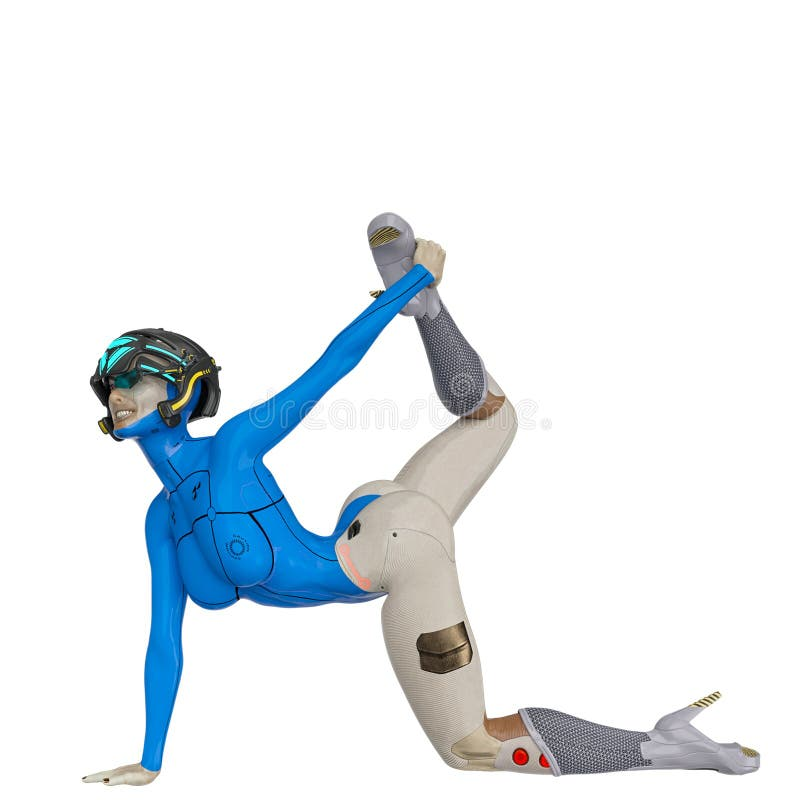

SESC CAMPO MOURÃO
Programa de Qualidade de Vida no Trabalho
Formação em Alongamento
Descubra a importância do alongamento para suas atividades diárias no trabalho! Complete os três níveis e ganhe seu diploma de especialista em alongamento.
💡 Por que alongar no trabalho?
• Reduz tensão muscular e dores nas costas
• Melhora a postura durante longas jornadas
• Aumenta a flexibilidade e bem-estar
• Previne lesões por esforço repetitivo
• Melhora a circulação sanguínea
• Melhora a postura durante longas jornadas
• Aumenta a flexibilidade e bem-estar
• Previne lesões por esforço repetitivo
• Melhora a circulação sanguínea

Nível 1 - Básico
0
Pontos
1
Questão
1
Nível
Parabéns!
0
Pontos Finais
0%
Aproveitamento
🌟 Dicas para aplicar no trabalho:
🏅 CERTIFICADO DE CONCLUSÃO 🏅
Especialista em Alongamento no Trabalho
Certificamos que

Nome do Participante
CPF: 000.000.000-00
concluiu com êxito o curso de
"Importância do Alongamento para Atividades de Serviço"
promovido pelo SESC Campo Mourão, demonstrando conhecimento sobre:
✓ Benefícios do alongamento para a saúde ocupacional
✓ Técnicas de alongamento para diferentes atividades
✓ Prevenção de lesões e melhoria de qualidade de vida
✓ Aplicação prática no ambiente de trabalho
✓ Técnicas de alongamento para diferentes atividades
✓ Prevenção de lesões e melhoria de qualidade de vida
✓ Aplicação prática no ambiente de trabalho
Pontuação obtida: 0 pontos
Aproveitamento: 0%
Aproveitamento: 0%